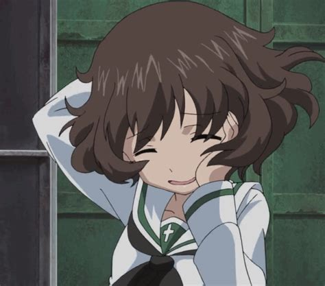

Yukari Akiyama (the GOAT)
Yukari Akiyama is a fluffy little creature that likes tonks and is a totally profesional spy. she is very cool :). Her favorite tonk/tank
is the Polish 7TPdw (two turret version) and her favorite flower is the Dandelion and her birthday is on the 6th of June :).
The fluffy creature (aka Yukari Akiyama) idolizes a fellow student of hers named Miho Nishizumi because uhhhhh..... well it doesnt say a specific reason in the anime sooooo
also also the fluff is a very good gunner but chose to be the loader of the tank they have because she is such a good teammate and friend
More Descriptive
"Your humble Yukari Akiyama Tank Corner!"
―Yukari in her own special Tank Corner
Yukari Akiyama (秋山 優花里, Akiyama Yukari) is one of the five main protagonists of Girls und Panzer and the loader of the Anglerfish Team.
Profile
Yukari is a second-year student from Ooarai Girls Academy. Yukari's parents are barbers and her house doubles as a barber shop, she is also the loader of the Anglerfish Team's Panzer IV.
The manga is told from Yukari's point of view. Through it, we learn that Yukari has been in love with tanks since she was little, but as other girls found interest in other things, she became isolated and ostracized by her classmates. When Ooarai reveals that its senshado program is being revived, she wastes no time in joining, finally finding a sanctuary where she can be herself. She is even more overjoyed when she learns that Miho Nishizumi has also joined, though under very different circumstances.
Appearance
Yukari is a medium-sized girl with messy chin-length dark brown hair and dark brown eyes.
Personality
Yukari has a cheerful personality and is a dedicated tank enthusiast. Her hobby is collecting scale models of tanks, as well as relics from tanks and wars like wheels, tracks, jerrycans, shells, and uniforms. She has a great respect for Miho, and habitually refers to her as "Nishizumi-dono". She even remembered Miho's vital statistics, such as her three sizes from Water War! OVA. i
Background
Yukari is the third new friend of Miho Nishizumi, since her transfer to Ooarai Girls Academy. She admires Miho intensely, almost like a starstruck fan. Yukari followed Miho's exploits during the previous Senshado Tournament finals and respects her decision to save her teammates.
During the mock match against the other girls from Ooarai's senshado team (which was supervised by their acting instructor Ami Chōno), Yukari acted as the gunner for Miho's tank and managed to hit every other tank on the field. After they won the mock-up match, Yukari offered to be the team's loader to allow Hana Isuzu to use her newfound skills as a gunner. Later, Yukari's tank crew would be called "Anglerfish Team."
Unknown to the rest of her team, Yukari infiltrated Saunders University High School's ship disguised as a Saunders student to learn about their strategies for the upcoming match against Ooarai in the national tournament. She managed to learn which tanks Saunders planned to use, as well as their general strategy, shortly before being discovered and forced to flee. When Yukari returned, she was surprised to find Miho and the rest of the Anglerfish Team waiting for her in her room. They had come to visit her home as they were worried about not seeing her for the entire day. Yukari then showed the girls her self-made video of her Saunders campus infiltration.
During the semi-final Senshado match against Pravda Girls High School, Yukari left the abandoned church along with Erwin in order to do reconnaissance and find the locations of Pravda's tanks, including their flag tank.
In the manga, during the match against Anzio she commanded a B1 bis. During the battle, it was damaged by Anchovy's P40 and never managed to knock anyone out. Yukari was upset at this.
Infiltrated Schools
Yukari is a notorious spy and has infiltrated several schools (usually whichever school Ooarai will be facing next) to determine their strengths and weaknesses as well as their tank deployments, with mixed results. Some of the schools she has infiltrated are:
1) Saunders University High School, also her first spying action. She disguised herself as a student, even attending their team's pre-match briefing and acquiring all the intelligence she needed simply by asking. Unfortunately, her questions drew Naomi's attention and her cover was swiftly blown, forcing her to make a hasty escape, but by then she had all the information she wanted.
2) Anzio Girls High School, quite successfully acquiring info about the new Carro Armato P40 from Pepperoni, who mistook her for a regular pasta stall customer and told her all about the new "superweapon."
3) BC Freedom High School, a total failure, since Marie anticipated her mission and staged a school-wide brawl to deceive her about BC Freedom's cohesion, and this counterintelligence effort almost cost Ooarai their first match in the Winter Continuous Track Cup.
4) St. Gloriana Girls College, caught instantly by Orange Pekoe, forcing her to hide in a set of armor. By disguising herself as a ghost, she forced Darjeeling to show the tank deployment of St. Gloriana.
5) Pravda Girls High School, disguised as a Russian bear. She was forced to abort her mission when Nonna, mistaking her for a real bear, shot her with an SVD designated marksman rifle in attempt to protect Katyusha.
6) Bonple High School, quickly caught by Uszka, but to her surprise, Uszka gave her a complete tour of Bonple and their tank practice ground, and even introduced her to Bonple's Tankathlon grandmaster, Jajka, as Uszka's cousin.
Yukari's espionage inspired Shizuka Tsuruki to follow her path when she infiltrated BC Freedom and Kuromorimine. Shizuka's infiltration of Kuromorimine failed, though, because Erika Itsumi and Maho Nishizumi knew every member of Kuromorimine's senshado team and knew that she was not a part of it.

Return Back